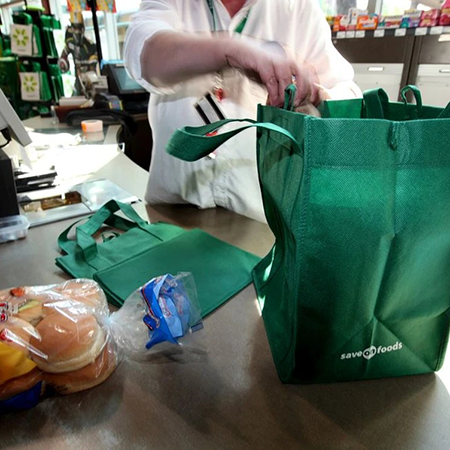
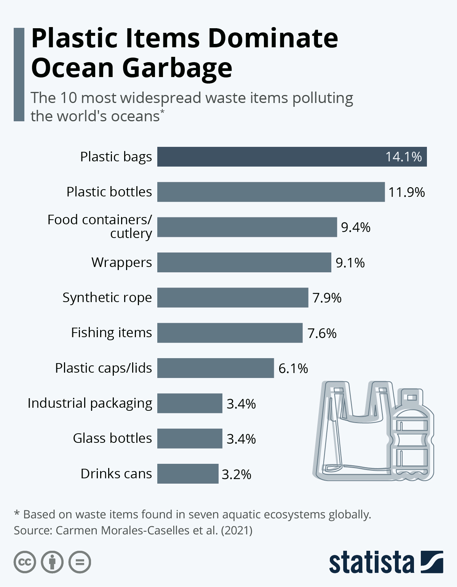
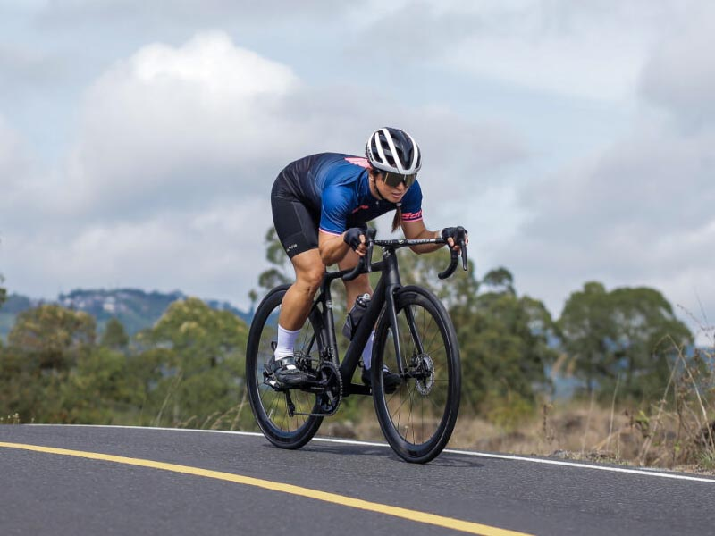
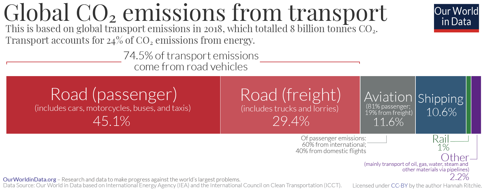
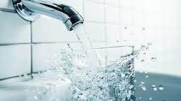
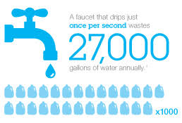
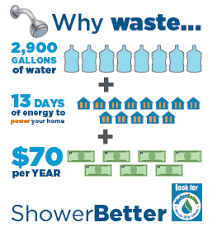

Practical steps to live sustainably every day

Reduce plastic waste by carrying your own reusable shopping bag.
Learn More
Using reusable bags helps reduce plastic pollution and saves resources. You can also use cloth bags for groceries and other shopping needs.


Reduce carbon emissions by biking or walking instead of driving.
Learn More
Biking or walking not only helps the environment but also improves your health and saves money on transport. If not possible, opt for public transport instead of personal vehicles, for cheaper prices too.


Save water by turning off taps when not in use.
Learn More
Conserving water reduces energy usage and protects water supplies for future generations.

